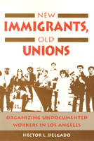

A case study of a successful effort to unionize undocumented immigrant workers
A case study of a successful effort to unionize undocumented immigrant workers


 A case study of a successful effort to unionize undocumented immigrant workers
A case study of a successful effort to unionize undocumented immigrant workers

|  |
New Immigrants, Old UnionsOrganizing Undocumented Workers in Los AngelesH�ctor L. Delgadopaper EAN: 978-1-56639-205-1 (ISBN: 1-56639-205-5) |
"Delgado has fashioned an intricate and thorough case study of a trade union drive led by undocumented workers at a waterbed factory in Los Angeles.... This is a benchmark study which will further our understanding of experiences of Mexican and Central American immigrants."
—Vicki Ruiz
Undocumented immigrant workers "cannot be organized," some believe, because fear of deportation by immigration authorities is too great. H�ctor Delgado challenges this view in an intricate case study of a successful union campaign waged by undocumented workers in a Los Angeles waterbed factory.
Relying on interviews with workers, union organizers, and management, and on personal observation, Delgado relates the story of undocumented workers from Mexico and Central America who voted by a two-to-one margin for union representation and negotiated a collective bargaining agreement in the face of stiff employer opposition. He identifies the primary factors that affect immigrant unionization: their length of residency in the U.S., their roots and social networks, the demand for their labor, the commitment of unions, and the relatively low visibility of the Immigration and Naturalization Service in Los Angeles.
Acknowledgments
1. Organizing the Unorganizable
2. The Organizing Campaign
3. The World of the Workers
4. Undocumented Workers and the Law
5. Undocumented Workers and Organized Labor
Notes
Bibliography
Index
H�ctor L. Delgado is Assistant Professor in the Department of Sociology and the Mexican-American Studies and Research Center at the University of Arizona.
Labor Studies and Work
Latino/a Studies
© 2015 Temple University. All Rights Reserved. This page: http://www.temple.edu/tempress/titles/919_reg.html.